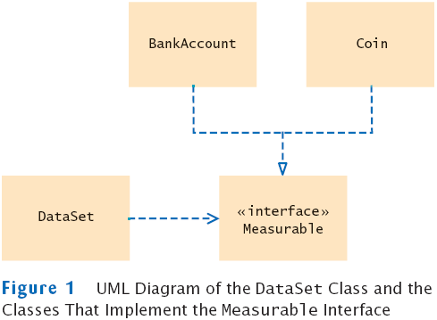
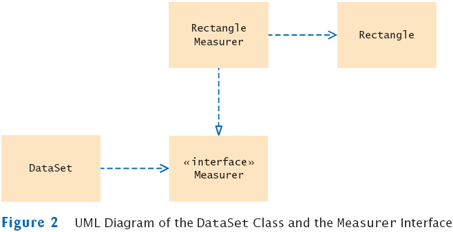
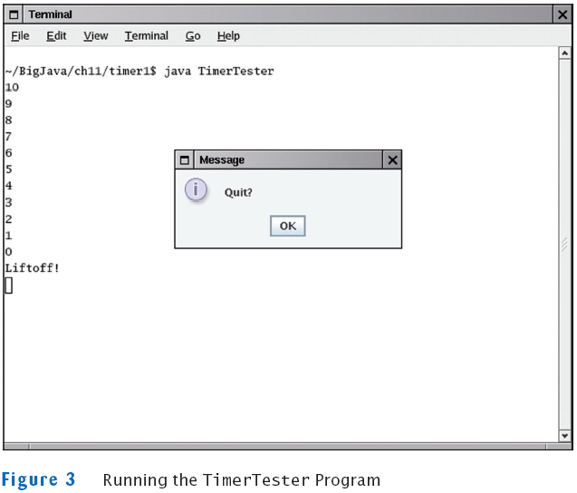
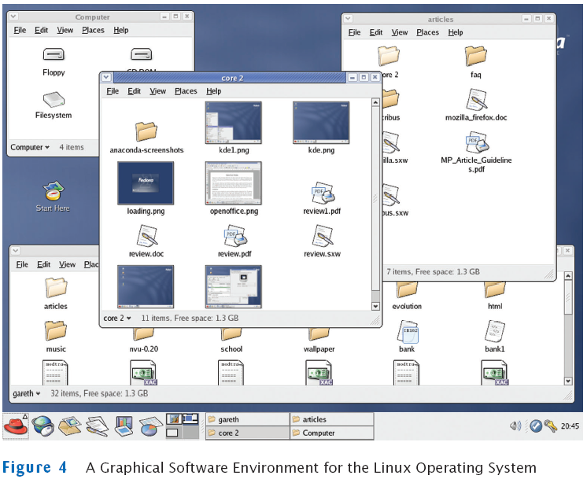

Chapter 11
Interfaces and Polymorphism
Chapter Goals
- To learn about interfaces
- To be able to convert between class and interface references
- To understand the concept of polymorphism
- To appreciate how interfaces can be used to decouple classes
- To learn how to implement helper classes as inner classes
- To understand how inner classes access variables from the surrounding scope
- To implement event listeners for timer events
Using Interfaces for Code Reuse
Using Interfaces for Code Reuse
Using Interfaces for Code Reuse
Interfaces vs. Classes
An interface type is similar to a class, but there are several important differences:
- All methods in an interface type are abstract; they don't have an implementation
- All methods in an interface type are automatically public
- An interface type does not have instance fields
Generic DataSet for Measurable Objects
public class DataSet
{
. . .
public void add(Measurable x)
{
sum = sum + x.getMeasure();
if (count == 0 || maximum.getMeasure() < x.getMeasure())
maximum = x;
count++;
}
public Measurable getMaximum()
{
return maximum;
}
private double sum;
private Measurable maximum;
private int count;
}
Implementing an Interface Type
- Use implements keyword to indicate that a class implements an interface type
public class BankAccount implements Measurable
{
public double getMeasure()
{
return balance;
}
// Additional methods and fields
}
- A class can implement more than one interface type
- Class must define all the methods that are required by all the interfaces it implements
- Another example:
public class Coin implements Measurable
{
public double getMeasure()
{
return value;
}
. . .
}
UML Diagram of DataSet and Related Classes
- Interfaces can reduce the coupling between classes
- UML notation:
- Interfaces are tagged with a "stereotype" indicator «interface»
- A dotted arrow with a triangular tip denotes the "is-a" relationship between a class and an interface
- A dotted line with an open v-shaped arrow tip denotes the "uses" relationship or dependency
- Note that DataSet is decoupled from BankAccount and Coin

Syntax 11.1: Defining an Interface
| |
public interface InterfaceName
{
// method signatures
} |
Example:
| |
public interface Measurable
{
double getMeasure();
} |
Purpose:
To define an interface and its method signatures. The methods are automatically public. |
Syntax 11.2: Implementing an Interface
| |
public class ClassName
implements InterfaceName, InterfaceName, ...
{
// methods
// instance variables
} |
Example:
| |
public class BankAccount implements Measurable
{
// Other BankAccount methods
public double getMeasure()
{
// Method implementation
}
} |
Purpose:
To define a new class that implements the methods of an interface
|
File DataSetTester.java
Output
Average balance = 4000.0
Highest balance = 10000.0
Average coin value = 0.13333333333333333
Highest coin value = 0.25
Self Check
- Suppose you want to use the DataSet class to find the Country object with the
largest population. What condition must the Country class fulfill?
- Why can't the add method of the DataSet class have a parameter of type Object?
Answers
- It must implement the Measurable interface, and its getMeasure method must return the population
- The Object class doesn't have a getMeasure method, and the add method invokes the getMeasure method
Converting Between Class and Interface Types
- You can convert from a class type to an interface type, provided the class implements the interface
- BankAccount account = new BankAccount(10000);
Measurable x = account; // OK
- Coin dime = new Coin(0.1, "dime");
Measurable x = dime; // Also OK
- Cannot convert between unrelated types
Measurable x = new Rectangle(5, 10, 20, 30); // ERROR
Because Rectangle doesn't implement Measurable
Casts
- Add coin objects to DataSet
DataSet coinData = new DataSet();
coinData.add(new Coin(0.25, "quarter"));
coinData.add(new Coin(0.1, "dime"));
. . .
Measurable max = coinData.getMaximum(); // Get the largest coin
- What can you do with it? It's not of type Coin
String name = max.getName(); // ERROR
- You need a cast to convert from an interface type to a class type
- You know it's a coin, but the compiler doesn't. Apply a cast:
Coin maxCoin = (Coin) max;
String name = maxCoin.getName();
- If you are wrong and max isn't a coin, the compiler throws an exception
- Difference with casting numbers:
When casting number types you agree to the information loss
When casting object types you agree to that risk of causing an exception
Self Check
- Can you use a cast (BankAccount) x to convert a Measurable variable x to a
BankAccount reference?
- If both BankAccount and Coin implement the Measurable interface, can a Coin reference
be converted to a BankAccount reference?
Answers
- Only if x actually refers to a BankAccount object.
- No–a Coin reference can be converted to a Measurable reference, but if you
attempt to cast that reference to a BankAccount, an exception occurs.
Polymorphism
- Interface variable holds reference to object of a class that implements the interface
Measurable x;
x = new BankAccount(10000);
x = new Coin(0.1, "dime");
Note that the object to which x refers doesn't have type Measurable; the type of the object is some class that
implements the Measurable interface
- You can call any of the interface methods:
double m = x.getMeasure();
- Which method is called?
Polymorphism
- Depends on the actual object.
- If x refers to a bank account, calls BankAccount.getMeasure
- If x refers to a coin, calls Coin.getMeasure
- Polymorphism (many shapes): Behavior can vary depending on the actual type of an object
- Called late binding: resolved at runtime
- Different from overloading; overloading is resolved by the compiler (early binding)
Self Check
- Why is it impossible to construct a Measurable object?
- Why can you nevertheless declare a variable whose type is Measurable?
- What do overloading and polymorphism have in common? Where do they differ?
Answers
- Measurable is an interface. Interfaces have no fields and no method
implementations.
- That variable never refers to a Measurable object. It refers to an object of some
class–a class that implements the Measurable interface.
- Both describe a situation where one method name can denote multiple methods.
However, overloading is resolved early by the compiler, by looking at the
types of the parameter variables. Polymorphism is resolved late, by looking at
the type of the implicit parameter object just before making the call.
Using Interfaces for Callbacks
Using Interfaces for Callbacks
Using Interfaces for Callbacks
UML Diagram of Measurer Interface and Related Classes
- Note that the Rectangle class is decoupled from the Measurer interface

File DataSet.java
File DataSetTester2.java
File Measurer.java
File RectangleMeasurer.java
Output
Average area = 616.6666666666666
Maximum area rectangle = java.awt.Rectangle[x=10,y=20,width=30,height=40]
Self Check
- Suppose you want to use the DataSet class of Section 11.1 to find the longest
String from a set of inputs. Why can't this work?
- How can you use the DataSet class of this section to find the longest String
from a set of inputs?
- Why does the measure method of the Measurer interface have one more parameter
than the getMeasure method of the Measurable interface?
Answers
- The String class doesn't implement the Measurable interface.
- Implement a class StringMeasurer that implements the Measurer interface.
- A measurer measures an object, whereas getMeasure measures "itself", that is,
the implicit parameter.
Inner Classes
Syntax 11.3: Inner Classes
| |
Declared inside a method
class OuterClassName
{
method signature
{
. . .
class InnerClassName
{
// methods
// fields
}
. . .
}
. . .
}
| |
Declared inside the class
class OuterClassName
{
// methods
// fields
accessSpecifier class InnerClassName
{
// methods
// fields
}
. . .
} |
Example:
| |
public class Tester
{
public static void main(String[] args)
{
class RectangleMeasurer implements Measurer
{
. . .
}
. . .
}
} |
Purpose:
To define an inner class whose scope is restricted to a single method or the methods of a
single class |
File DataSetTester3.java
Self Check
- Why would you use an inner class instead of a regular class?
- How many class files are produced when you compile the DataSetTester3 program?
Answers
- Inner classes are convenient for insignificant classes. Also, their methods can
access variables and fields from the surrounding scope.
- Four: one for the outer class, one for the inner class, and two for the DataSet
and Measurer classes.
Processing Timer Events
- javax.swing.Timer generates equally spaced timer events
- Useful whenever you want to have an object updated in regular intervals
- Sends events to action listener
public interface ActionListener
{
void actionPerformed(ActionEvent event);
}
- Define a class that implements the ActionListener interface
class MyListener implements ActionListener
{
void actionPerformed(ActionEvent event)
{
// This action will be executed at each timer event
Place listener action here
}
}
- Add listener to timer
MyListener listener = new MyListener();
Timer t = new Timer(interval, listener);
t.start();
Example: Countdown
- Example: a timer that counts down to zero

- One second delay between printouts
File TimerTester.java
Self Check
- Why does a timer require a listener object?
- How many times is the actionPerformed method called in the preceding program?
Answers
- The timer needs to call some method whenever the time interval expires. It calls
the actionPerformed method of the listener object.
- It depends. The method is called once per second. The first eleven times, it
prints a message. The remaining times, it exits silently. The timer is only terminated
when the user quits the program.
Accessing Surrounding Variables
Accessing Surrounding Variables
- The actionPerformed method can access variables
from the surrounding scope, like this:
public static void main(String[] args)
{
. . .
final Rectangle box = new Rectangle(5, 10, 20, 30);
class Mover implements ActionListener
{
public void actionPerformed(ActionEvent event)
{
// Move the rectangle
box.translate(1, 1);
}
}
. . .
}
- Local variables that are accessed by an inner-class method must be declared as final
- Inner class can access fields of surrounding class that belong to the object that constructed the inner class object
- An inner class object created inside a static method can only access static surrounding fields
File TimerTester2.java
Output
java.awt.Rectangle[x=6,y=11,width=20,height=30]
java.awt.Rectangle[x=7,y=12,width=20,height=30]
java.awt.Rectangle[x=8,y=13,width=20,height=30]
. . .
java.awt.Rectangle[x=28,y=33,width=20,height=30]
java.awt.Rectangle[x=29,y=34,width=20,height=30]
Last box position: java.awt.Rectangle[x=29,y=34,width=20,height=30]
Self Check
- Why would an inner class method want to access a variable from a surrounding scope?
- If an inner class accesses a local variable from a surrounding scope, what special rule applies?
Answers
- Direct access is simpler than the alternative–passing the variable as a parameter
to a constructor or method.
- The local variable must be declared as final.
Operating Systems
